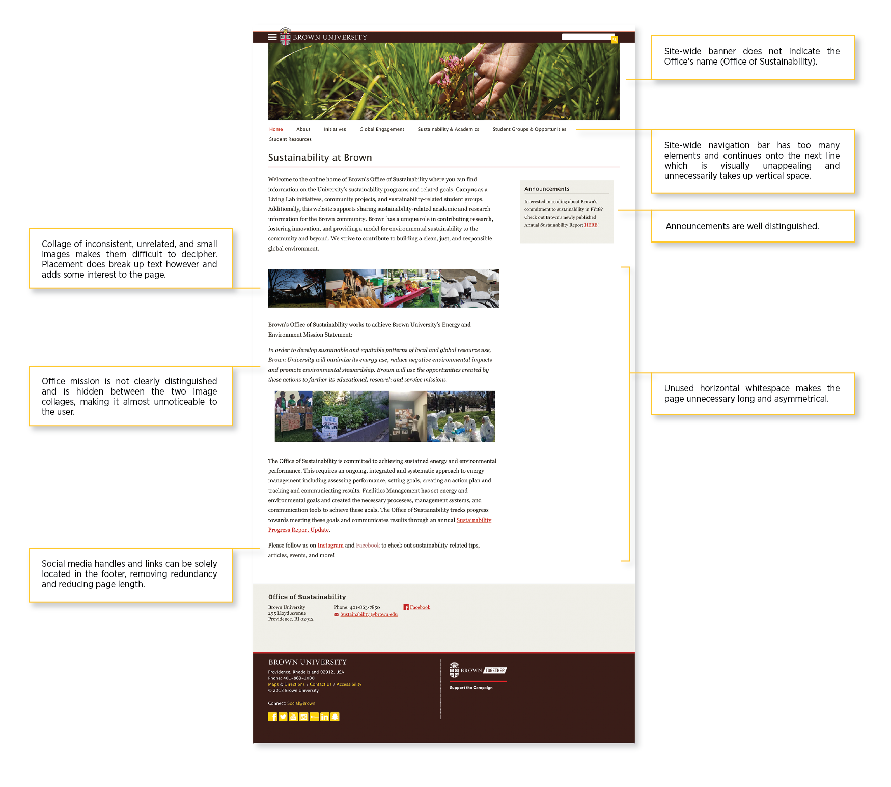
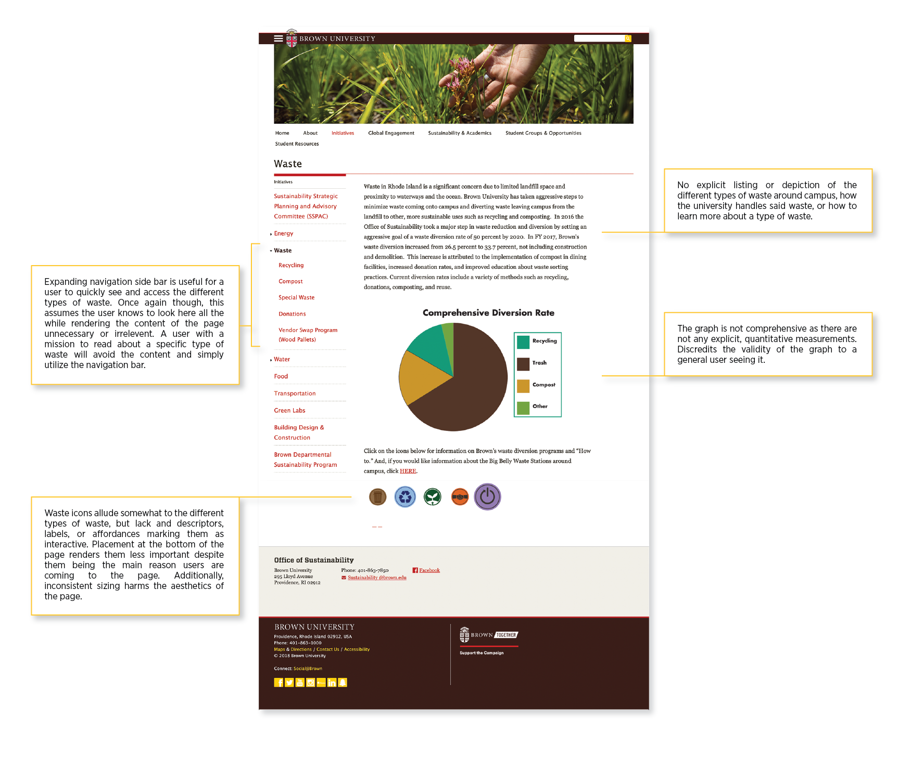
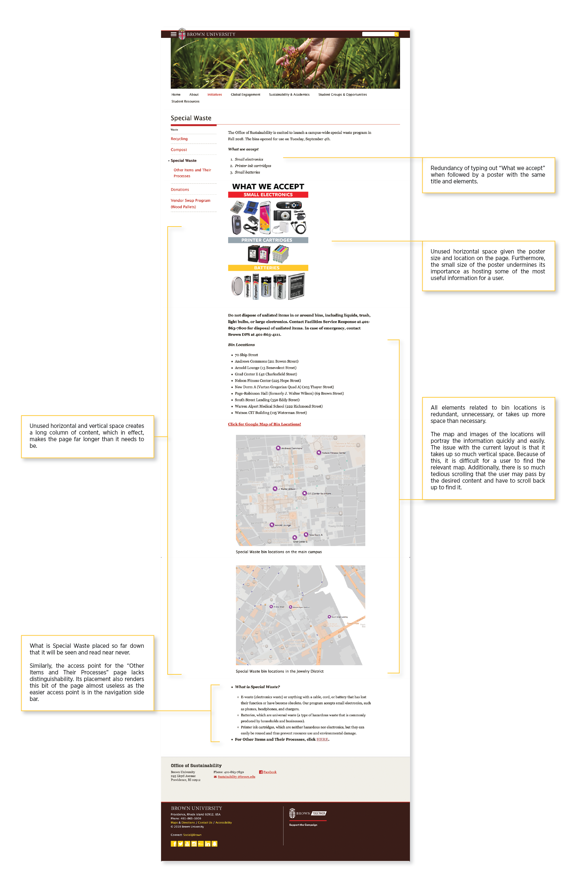
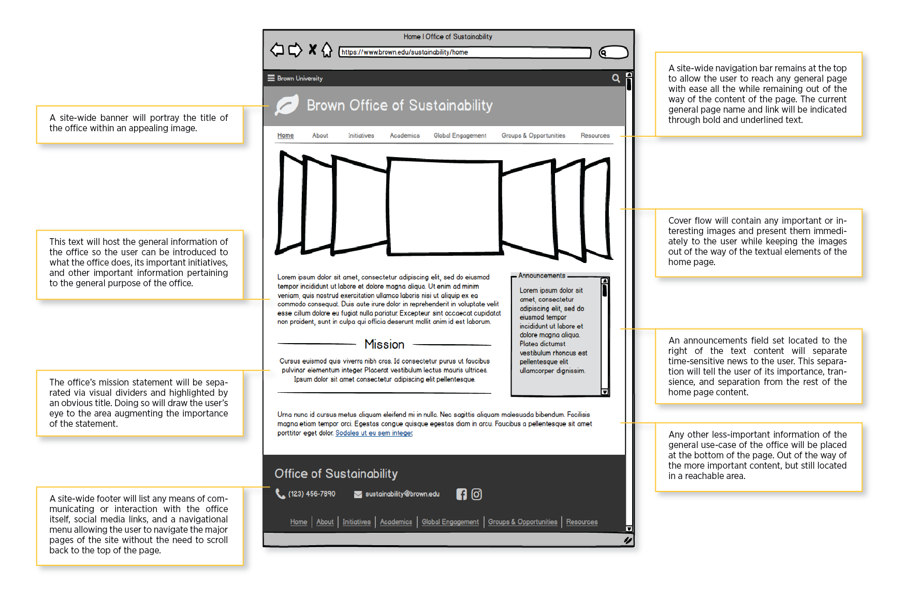
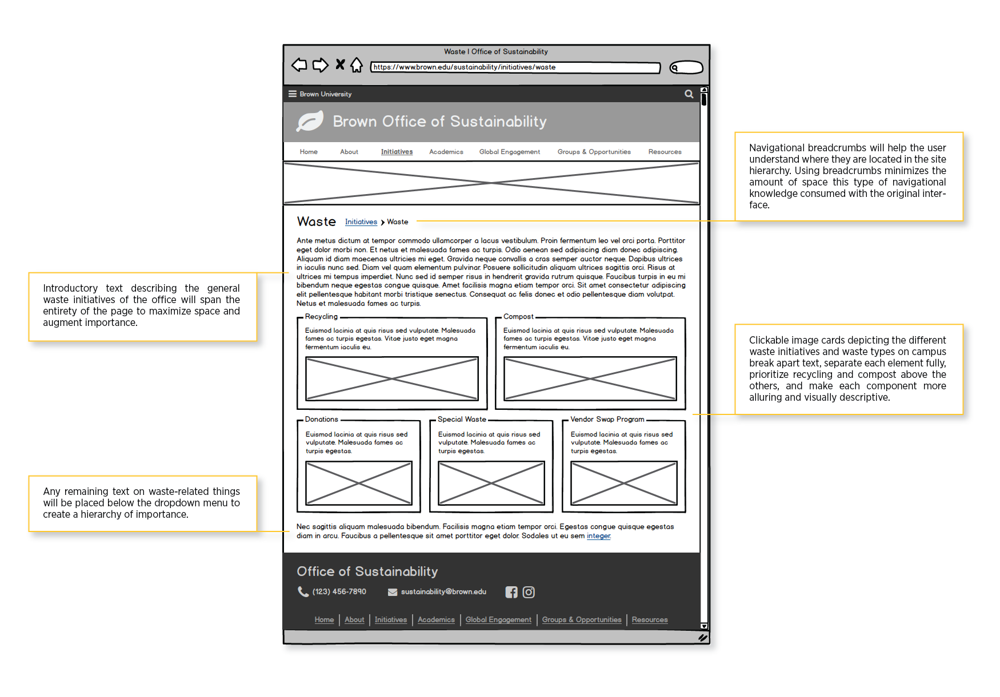
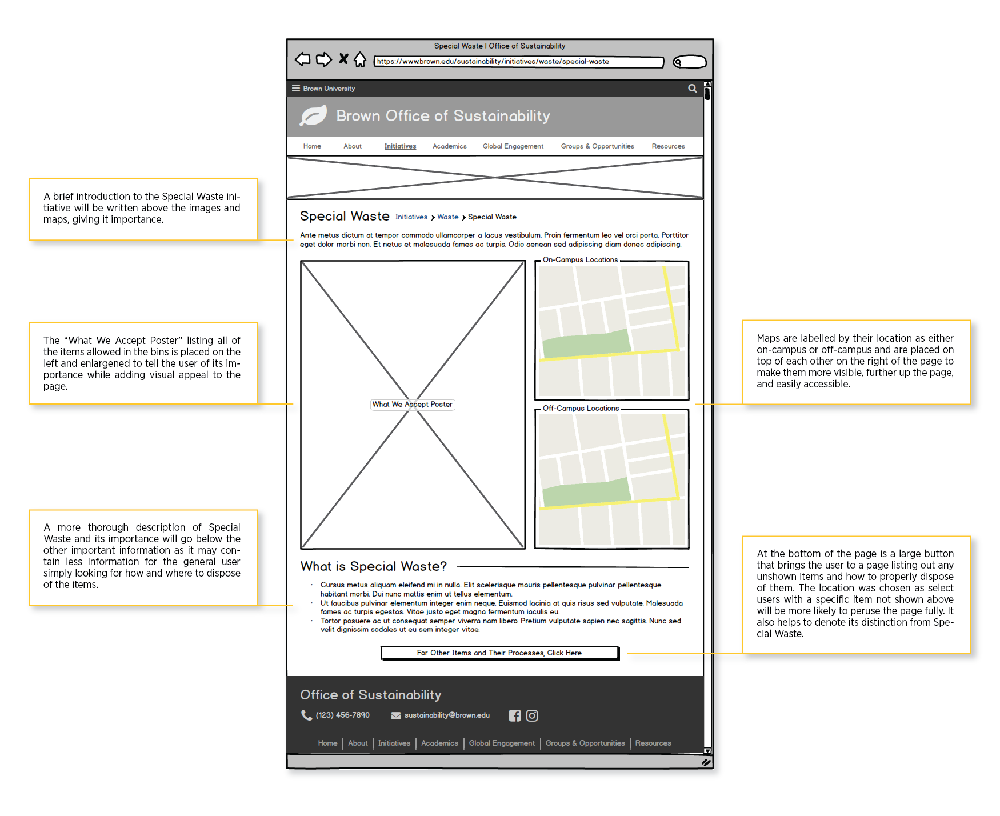

INTERFACE REDESIGN
Brown University’s Office of Sustainability has recently undergone an office-wide restandardization; it’s time its website has done the same. Currently, the website operates on an outdated, Brown-operated platform and lacks a few practical affordances and aesthetic qualities. The content is depicted in full, but lacks interest and is disorganized at some parts. The goal of this project is to redesign a set of pages from the site to better portray the Office’s mission and visual standards. This project was completed as an assignment for the class User Interface / User Experience (CSCI1300) at Brown University to showcase familiarity with the methodologies for interrogating the flaws of a current interface, creating lo-fidelity mockups to combat those flaws, and presenting hi-fidelity visually redesigned mockups. The project was then presented to my supervisor at the Office of Sustainability.
Background
The Office of Sustainability at Brown University manages all sustainability-related initiatives across campus. The main categories of interest include waste, water, energy, transportation, and food. Because these topics vary immensely, it is important to retain a sense of coherency and consistency across the site to remind the user its relevancy to the Office. Currently, the site is extensive, but is rather bland and difficult to navigate through. The majority of interactive, navigational elements exist in the side-bar to the left of most pages. This can make it easy to navigate for a familiar user, but for newer users, learning how to use the site is difficult and time-consuming. Additionally, the reliance on the sidebar navigation leads the user to focus more on the navigation bar itself instead of the content. This defeats the purpose of the site. Portraying the necessary information efficiently and attractively while retaining navigational ease is the issue to be addressed by this project. To limit the scope of the project, 5 navigationally-connected pages on waste will be critiqued and lo-fidelity mockups will be designed. There will not be a navigational change of the website either: the current navigational flow and wording will remain the same. Only one of these pages will receive a hi-fidelity design rendition — that being the general waste page where the user can go on to learn more about a waste topic of their choice.
Current Interface
Of the current interface, the pages to be critiqued and revised are: the home page, initiatives page, general waste page, special waste page, and special waste subpage. These pages will be critiqued primarily on aesthetics with some focus of the content. The images below annotate each of the specified pages with opinions on the elements, layouts, and fonts. The main issues that arose involve issues with layouts and page lengths.
Home Page
Initiatives Page

Waste Page
Special Waste Page
Other Items and Their Processes Page

Lo-Fidelity Mockups
The lo-fidelity mockups of each page do not utilize every piece of content from the original site: filler text and blank image placeholders allow for a purely layout-centric design. Below are annotated images describing the updated elements of each page’s respective mockup.
Home Page
Initiatives Page

Waste Page
Special Waste Page
Other Items and Their Processes Page

Hi-Fidelity Redesign
The page chosen for a hi-fidelity redesign was the general waste page as it is one of subpages most likely to be (re)visited. It hosts very specific but broad content as well as important visual elements for navigation and information. The redesign consists of changes to colors, fonts, and alignments. Earthier tones are utilized to match the mood and mission of the Office. A grid of images presents the 5 different waste categories which simplifies the access points to them as well as making them obviously interactive. This combats the lack of interactive affordances from the entirely text-based system used in the old design. The font retains a consistent typeface throughout the header and body portions to curate a sense of unity and flow. The font only differs in the footer as it is more representative of Brown than the Office. Filler text was utilized to show the general appearance of the page; this allows the viewer to focus solely on layout presentation, ultimately giving room for content improvements.

Takeaways and Next Steps
The grandest takeaway from this project is that the office’s website needs a large revamping that will take a few iterations to reach perfection. Deciphering the elements of the current website that don’t work alongside brainstorming solutions to these problems will require some work as there must be a complete renovation of the office’s branding. Important next steps would be to work with the office to verify a standard aesthetic, curate a team of individuals to update content and the website itself, and to run some tests to see how effective the changes are.